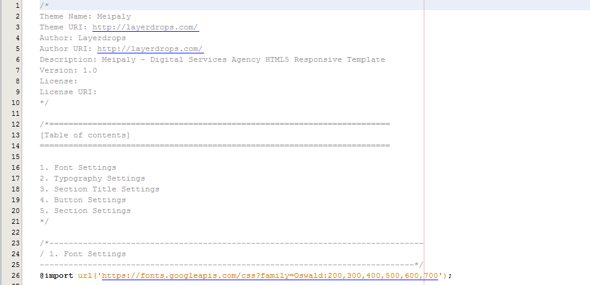

Meipaly
Digital Services Agency HTML5 Responsive
- created: 01/23/2019
- latest update: 01/23/2019
- by: Layerdrops
- email: info@layerdorps.com
Meipaly - is a powerful Digital Services Agency PSD Template. It is highly suitable template for companies that offer Web Design, Digital Marketing, SEO Services and all other internet marketing and services related agencies.
Installation
In Meipaly package you will find 2 Zip file. One is Documentation and other one is meipaly.zip. meipaly.zip is the main file. Unzip it in your server. There you will able to see lots of files and folders. The unzip file structure should look like this one:
Lets describe folder first:
- ajax -> work for all portfolio ajax loading.
- css -> Store all custom css files and libraries.
- fonts -> Store all fonts. Mainly icon fonts are stored here.
- images -> All images are available here.
- js -> Store all custom js and libraries.
Now we are talking about all files.
- about.html -> This filese is for About Us page.
- blog.html, blog2.html & blog3.html -> Files responsible for blog listing page. Use which one you like.
- blog_single.html -> Responsible for blog details page.
- contact.html -> Used for contact us page.
- index.html, index2.html & index3.html -> used for home pages. Used which one you like. Index3.html is one page version.
- portfolio.html & portfolio2.html -> used for portfolio item listing page.
- portfolio_details.html -> responsible for portfolio details page.
- service.html -> used for service listing page.
- service_details.html -> used for service details page.
Now we will setup our home page. Choose your home page version and renamed that file to index.html. Refresh your url. Hope all will work fine. If you need any kind of help please contact us via email.
HTML Customization
Its easy to customize Meipaly. All part of codes are well commented. Please follow steps are noted bellow:
Color Scheme ->
Meipaly has 15 default accent color. You can choose any one of them. Or you can create onec by yourself. We will show you how to create it under CSS section. Now we are going to show you how to setup color scheme. Edit each of your html files with any editor. You will able to see this kind of code:
You just need to change the name of accent color css file. By default we use color1.css. If you want to use color15 then just edit 'color1.css' to 'color15.css'.
Head Part ->
In heade part you can able to change site Title, Favicon, Meta & CSS files.

Header & Menu ->
In Meipaly we used 2 header version 1 is light version and other one is dark version. Logo, Menu, Search & Popup menu will editable in header part.
This code is for dark version of header. If you want to change it to light version please remove the class 'black_color' from header tag. Here you can see the menu code. Change is as you want. One thing we should make clear about one page menu. Normaly there are a small difference between multipage menu and one page menu.
- Use 'scroll' class on 'li' if you make it one page menu.
- Use section ID instead of URL.
Hope that makes clear. Please let us know if you need any more help.
Preloader ->
Each html file contain preloader code by default. If you want to remove or edit please edit your targeted html files and find out 'Preloader' section. Do what you want
Revolution Slider ->
Here is one rev slider structure
For more details about Revolution slider please visit this link.
Footer ->
In Meipaly we use one version of footer. Here it is:
Meipaly is fully customizable html template. Well commented and structured. If you want to build your custome home with existing content of Meipaly then please follow the prcess are noted bellow.
- Create File -> Create a new HTML file with your given name. Asume that you want to create a page "test.html".
- Open your about.html file with any editor. You can use Notepad++. And please open one existing html file.
- Now you just need to copy your choosen sections and paste it to your new about. html.
CSS
We'r using three CSS files in this template. The first one is a generic reset file preset.css. Many browser interpret the default behavior of html elements differently. By using a general preset CSS file, we can work round this. This file also contains some general styling, such as anchor tag colors, font-sizes, etc. Keep in mind, that these values might be overridden somewhere else in the file.
Path: css/preset.css

The second file contains all of the specific stylings for the page named theme.css. The file is separated into sections using comment.
Path: css/theme.css

And third file is for maintain responsiveness of the theme named responsive.css. The file separated with media queries.
Path: css/responsive.css
JS
We used losts of JS third party plugins. Here in yoox we write custom script in one file named theme.js. File locate under js/ folder. We are going to show you some important part of our theme.js file.
Revolution Slider ->

Fun Fact ->
Google Map
Credits
First of all we wanna thanks all of those autor who make our task easy.
CSS Credits ->
- Bootstrap
- Animate CSs
JS Credits ->
- DL Menu
- Magnific Popup
- Owl Carousel
- JQuery Appear
- Slick Slider
Thanks
Once again, thank you so much for purchasing this product. As I said at the beginning, I'd be glad to help you if you have any questions relating to this theme. If you have a more general question relating to the themes on ThemeForest, you might consider visiting the forums and asking your question in the "Item Discussion" section.